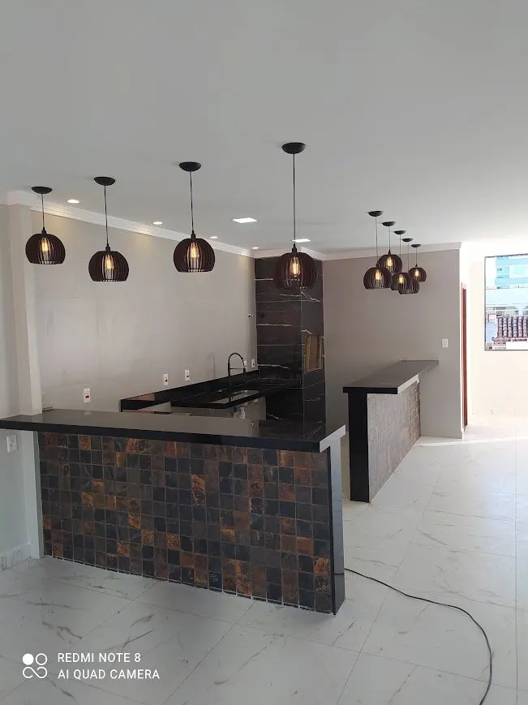

Reformas residenciais e comerciais
Reformas em casas, apartamentos e pontos comerciais, com organização das etapas e cuidado no acabamento.
Orçar reforma
Serra, ES · Grande Vitória
A D'Martins Construções executa obras residenciais, comerciais e públicas com planejamento, organização por etapas e engenheiro civil acompanhando a qualidade da execução.
Orçamento
O formulário abaixo organiza as informações essenciais e abre uma conversa pronta no WhatsApp.
Serviços
A empresa une projeto, execução e acompanhamento técnico para reduzir retrabalho, alinhar expectativas e manter a obra mais previsível.
Reformas em casas, apartamentos e pontos comerciais, com organização das etapas e cuidado no acabamento.
Orçar reformaExecução do início ao fim, com planejamento por fases, controle de qualidade e acompanhamento técnico.
Orçar construçãoExecução para órgãos públicos com foco em prazo, qualidade e registro das etapas de serviço.
Falar sobre obraProjeto para reforma ou construção antes da obra começar, ajudando a definir escopo, layout e soluções.
Orçar projetoProjetos que completam a arquitetura e ajudam a evitar improviso, desperdício e retrabalho na execução.
Saber maisExecuções especializadas
O atendimento também contempla etapas específicas de construção, reforma e acabamento. A definição do serviço adequado depende da análise do local e do escopo da obra.
Obras realizadas
Uma galeria voltada para mostrar materialidade: fundação, revestimentos, calçadas, acabamentos internos e frentes de obra.



Como trabalhamos
A D'Martins atende direto pelo WhatsApp, entende a necessidade, avalia a etapa da obra e direciona projeto, reforma ou execução com acompanhamento técnico.
Conversar com a equipe
Quem faz
A D'Martins Construções trabalha com reformas residenciais e comerciais, construções, obras públicas, projetos de arquitetura e projetos complementares.
Dúvidas frequentes
Sim. A base fica na Serra, ES, com atendimento na Grande Vitória, incluindo Vitória, Vila Velha e Cariacica.
A empresa faz reformas, construções, obras públicas, projetos de arquitetura e projetos complementares.
Sim. O ideal é enviar o tipo de serviço, local, etapa da obra, medidas aproximadas e fotos quando houver.
A D'Martins conta com engenheiro civil para acompanhamento de obras, garantindo mais segurança e qualidade na execução.
Sim. Além de residências, a empresa atende comércios e obras públicas.
Contato
Chame no WhatsApp e envie as informações da obra. Quanto mais claro o primeiro contato, mais preciso fica o direcionamento.